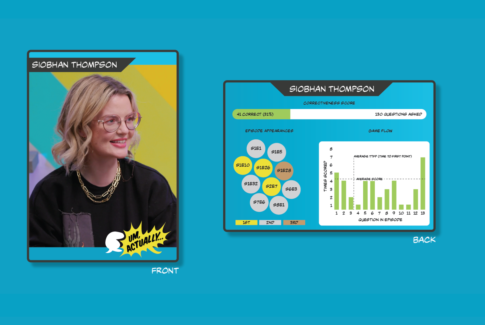

Um, Actually... TCG
Introducing the exciting new trading card game based on the hit show "Um, Actually...." In this game, players will compete to prove their knowledge of pop culture trivia and outwit their opponents by spotting and correcting "nerd culture" mistakes.
Inspired by the popular Dropout series, the game features beautifully designed cards with intricate illustrations and clever references to all your favorite TV shows, movies, comics, and games.
Whether you're a die-hard fan or just looking for a fun way to test your knowledge, "Um, Actually... the Trading Card Game" is sure to provide hours of entertainment and challenge.
This project was completed as part of my curriculum at the Maryland Institute College of Art while pursuing my master’s in data analytics and visualization.

![A detailed breakdown of the back of the trading card. The card features the name of the contestant on the top. There is a correctiveness score displayed with a thermometer meter with a green highlight showing the correct answer percentage. Episode appearances are displayed with bubbles, with each bubble representing their episode and colored based on their placement for the episode; gold for first, silver for second, bronze for third. A bar chart displays each question asked in a given episode, whether they answered, and the time it took to answer.](../assets/images/portfolio/um-actually-4.png)
Disclaimer: "Um, Actually... the Trading Card Game" is a fan-inspired project created solely for the purpose of showcasing design skills and creativity. This project is not officially affiliated with or endorsed by the creators, producers, or owners of the "Um, Actually..." TV show or any of its associated brands or intellectual properties. All characters, logos, names, and trademarks used in this project belong to their respective owners and are used for illustrative purposes only. The creators of this project do not claim ownership of any intellectual property used in this project.